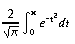
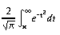

std.math
Elementary mathematical functions Contains the elementary mathematical functions (powers, roots, and trignometric functions), and low-level floating-point operations. Mathematical special functions are available in std.mathspecial. The functionality closely follows the IEEE754-2008 standard for floating-point arithmetic, including the use of camelCase names rather than C99-style lower case names. All of these functions behave correctly when presented with an infinity or NaN. Unlike C, there is no global 'errno' variable. Consequently, almost all of these functions are pure nothrow. Status:The gamma and error functions have been superceded by improved versions in std.mathspecial. They will be officially deprecated in std.math in DMD2.055. The semantics and names of feqrel and approxEqual will be revised. Source:
std/math.d License:
Boost License 1.0. Authors:
Walter Bright, Don Clugston Source:
std/math.d
- e = 2.718281...
- log210 = 3.321928...
- log2e = 1.442695...
- log102 = 0.301029...
- log10e = 0.434294...
- ln 2 = 0.693147...
- ln 10 = 2.302585...
- π = 3.141592...
- π / 2 = 1.570796...
- π / 4 = 0.785398...
- 1 / π = 0.318309...
- 2 / π = 0.636619...
- 2 / √π = 1.128379...
- √2 = 1.414213...
- √½ = 0.707106...
- Calculates the absolute value For complex numbers, abs(z) = sqrt( z.re2 + z.im2 ) = hypot(z.re, z.im).
- Complex conjugate conj(x + iy) = x - iy Note that z * conj(z) = z.re2 - z.im2 is always a real number
- Returns cosine of x. x is in radians.
BUGS:Special Values x cos(x) invalid? NAN NAN yes ±∞ NAN yes
Results are undefined if |x| >= 264. - Returns sine of x. x is in radians.
BUGS:Special Values x sin(x) invalid? NAN NAN yes ±0.0 ±0.0 no ±∞ NAN yes
Results are undefined if |x| >= 264. - sine, complex and imaginary sin(z) = sin(z.re)*cosh(z.im) + cos(z.re)*sinh(z.im)i If both sin(θ) and cos(θ) are required, it is most efficient to use expi(θ).
- cosine, complex and imaginary cos(z) = cos(z.re)*cosh(z.im) - sin(z.re)*sinh(z.im)i
- Returns tangent of x. x is in radians.
Special Values x tan(x) invalid? NAN NAN yes ±0.0 ±0.0 no ±∞ NAN yes - Calculates the arc cosine of x,
returning a value ranging from 0 to π.
Special Values x acos(x) invalid? >1.0 NAN yes <-1.0 NAN yes NAN NAN yes - Calculates the arc sine of x,
returning a value ranging from -π/2 to π/2.
Special Values x asin(x) invalid? ±0.0 ±0.0 no >1.0 NAN yes <-1.0 NAN yes - Calculates the arc tangent of x,
returning a value ranging from -π/2 to π/2.
Special Values x atan(x) invalid? ±0.0 ±0.0 no ±∞ NAN yes - Calculates the arc tangent of y / x,
returning a value ranging from -π to π.
Special Values y x atan(y, x) NAN anything NAN anything NAN NAN ±0.0 >0.0 ±0.0 ±0.0 +0.0 ±0.0 ±0.0 <0.0 ±π ±0.0 -0.0 ±π >0.0 ±0.0 π/2 <0.0 ±0.0 -π/2 >0.0 ∞ ±0.0 ±∞ anything ±π/2 >0.0 -∞ ±π ±∞ ∞ ±π/4 ±∞ -∞ ±3π/4 - Calculates the hyperbolic cosine of x.
Special Values x cosh(x) invalid? ±∞ ±0.0 no - Calculates the hyperbolic sine of x.
Special Values x sinh(x) invalid? ±0.0 ±0.0 no ±∞ ±∞ no - Calculates the hyperbolic tangent of x.
Special Values x tanh(x) invalid? ±0.0 ±0.0 no ±∞ ±1.0 no - Calculates the inverse hyperbolic cosine of x.
Mathematically, acosh(x) = log(x + sqrt( x*x - 1))
Special Values x acosh(x) NAN NAN <1 NAN 1 0 +∞ +∞ - Calculates the inverse hyperbolic sine of x.
Mathematically,
asinh(x) = log( x + sqrt( x*x + 1 )) // if x >= +0 asinh(x) = -log(-x + sqrt( x*x + 1 )) // if x <= -0
Special Values x asinh(x) NAN NAN ±0 ±0 ±∞ ±∞ - Calculates the inverse hyperbolic tangent of x,
returning a value from ranging from -1 to 1.
Mathematically, atanh(x) = log( (1+x)/(1-x) ) / 2
Special Values x acosh(x) NAN NAN ±0 ±0 -∞ -0 - Returns x rounded to a long value using the current rounding mode. If the integer value of x is greater than long.max, the result is indeterminate.
- Returns x rounded to a long value using the FE_TONEAREST rounding mode. If the integer value of x is greater than long.max, the result is indeterminate.
- Compute square root of x.
Special Values x sqrt(x) invalid? -0.0 -0.0 no <0.0 NAN yes +∞ +∞ no - ditto
Compute square root of x.
Special Values x sqrt(x) invalid? -0.0 -0.0 no <0.0 NAN yes +∞ +∞ no - ditto
Compute square root of x.
Special Values x sqrt(x) invalid? -0.0 -0.0 no <0.0 NAN yes +∞ +∞ no - Calculates ex.
Special Values x ex +∞ +∞ -∞ +0.0 NAN NAN - Calculates the value of the natural logarithm base (e)
raised to the power of x, minus 1.
For very small x, expm1(x) is more accurate
than exp(x)-1.
Special Values x ex-1 ±0.0 ±0.0 +∞ +∞ -∞ -1.0 NAN NAN - Calculates 2x.
Special Values x exp2(x) +∞ +∞ -∞ +0.0 NAN NAN - Calculate cos(y) + i sin(y). On many CPUs (such as x86), this is a very efficient operation; almost twice as fast as calculating sin(y) and cos(y) separately, and is the preferred method when both are required.
- Separate floating point value into significand and exponent.
Returns:
Calculate and return x and exp such that value =x*2exp and .5 <= |x| < 1.0 x has same sign as value.Special Values value returns exp ±0.0 ±0.0 0 +∞ +∞ int.max -∞ -∞ int.min ±NAN ±NAN int.min - Extracts the exponent of x as a signed integral value.
If x is not a special value, the result is the same as
cast(int)logb(x).
Special Values x ilogb(x) Range error? 0 FP_ILOGB0 yes ±∞ int.max no NAN FP_ILOGBNAN no - Compute n * 2exp
References:
frexp - Calculate the natural logarithm of x.
Special Values x log(x) divide by 0? invalid? ±0.0 -∞ yes no <0.0 NAN no yes +∞ +∞ no no - Calculate the base-10 logarithm of x.
Special Values x log10(x) divide by 0? invalid? ±0.0 -∞ yes no <0.0 NAN no yes +∞ +∞ no no - Calculates the natural logarithm of 1 + x.
For very small x, log1p(x) will be more accurate than
log(1 + x).
Special Values x log1p(x) divide by 0? invalid? ±0.0 ±0.0 no no -1.0 -∞ yes no <-1.0 NAN no yes +∞ -∞ no no - Calculates the base-2 logarithm of x:
log2x
Special Values x log2(x) divide by 0? invalid? ±0.0 -∞ yes no <0.0 NAN no yes +∞ +∞ no no - Extracts the exponent of x as a signed integral value.
If x is subnormal, it is treated as if it were normalized.
For a positive, finite x:
1 <= x * FLT_RADIX-logb(x) < FLT_RADIX
Special Values x logb(x) divide by 0? ±∞ +∞ no ±0.0 -∞ yes - Calculates the remainder from the calculation x/y.
Returns:
The value of x - i * y, where i is the number of times that y can be completely subtracted from x. The result has the same sign as x.Special Values x y modf(x, y) invalid? ±0.0 not 0.0 ±0.0 no ±∞ anything NAN yes anything ±0.0 NAN yes !=±∞ ±∞ x no - Efficiently calculates x * 2n.
scalbn handles underflow and overflow in
the same fashion as the basic arithmetic operators.
Special Values x scalb(x) ±∞ ±∞ ±0.0 ±0.0 - Calculates the cube root of x.
Special Values x cbrt(x) invalid? ±0.0 ±0.0 no NAN NAN yes ±∞ ±∞ no - Returns |x|
Special Values x fabs(x) ±0.0 +0.0 ±∞ +∞ - Calculates the length of the
hypotenuse of a right-angled triangle with sides of length x and y.
The hypotenuse is the value of the square root of
the sums of the squares of x and y:
sqrt( + )
Note that hypot(x, y), hypot(y, x) and
hypot(x, -y) are equivalent.
Special Values x y hypot(x, y) invalid? x ±0.0 |x| no ±∞ y +∞ no ±∞ NAN +∞ no - Returns the error function of x. 
- Returns the complementary error function of x, which is 1 - erf(x). 
- Natural logarithm of gamma function.
Returns the base e (2.718...) logarithm of the absolute
value of the gamma function of the argument.
For reals, lgamma is equivalent to log(fabs(gamma(x))).
Special Values x lgamma(x) invalid? NAN NAN yes integer <= 0 +∞ yes ±∞ +∞ no - The Gamma function, Γ(x)
Γ(x) is a generalisation of the factorial function
to real and complex numbers.
Like x!, Γ(x+1) = x*Γ(x).
Mathematically, if z.re > 0 then
Γ(z) = ∫0∞ tz-1e-t dt
References:Special Values x Γ(x) invalid? NAN NAN yes ±0.0 ±∞ yes integer >0 (x-1)! no integer <0 NAN yes +∞ +∞ no -∞ NAN yes
http://en.wikipedia.org/wiki/Gamma_function, http://www.netlib.org/cephes/ldoubdoc.html#gamma - Returns the value of x rounded upward to the next integer (toward positive infinity).
- Returns the value of x rounded downward to the next integer (toward negative infinity).
- Rounds x to the nearest integer value, using the current rounding mode. Unlike the rint functions, nearbyint does not raise the FE_INEXACT exception.
- Rounds x to the nearest integer value, using the current rounding mode. If the return value is not equal to x, the FE_INEXACT exception is raised. nearbyint performs the same operation, but does not set the FE_INEXACT exception.
- Rounds x to the nearest integer value, using the current rounding mode. This is generally the fastest method to convert a floating-point number to an integer. Note that the results from this function depend on the rounding mode, if the fractional part of x is exactly 0.5. If using the default rounding mode (ties round to even integers) lrint(4.5) == 4, lrint(5.5)==6.
- Return the value of x rounded to the nearest integer. If the fractional part of x is exactly 0.5, the return value is rounded to the even integer.
- Return the value of x rounded to the nearest integer. If the fractional part of x is exactly 0.5, the return value is rounded away from zero.
- Returns the integer portion of x, dropping the fractional portion. This is also known as "chop" rounding.
- Calculate the remainder x REM y, following IEC 60559.
REM is the value of x - y * n, where n is the integer nearest the exact
value of x / y.
If |n - x / y| == 0.5, n is even.
If the result is zero, it has the same sign as x.
Otherwise, the sign of the result is the sign of x / y.
Precision mode has no effect on the remainder functions.
remquo returns n in the parameter n.
Note:Special Values x y remainder(x, y) n invalid? ±0.0 not 0.0 ±0.0 0.0 no ±∞ anything NAN ? yes anything ±0.0 NAN ? yes != ±∞ ±∞ x ? no
remquo not supported on windows - IEEE exception status flags ('sticky bits')
These flags indicate that an exceptional floating-point condition has occurred.
They indicate that a NaN or an infinity has been generated, that a result
is inexact, or that a signalling NaN has been encountered. If floating-point
exceptions are enabled (unmasked), a hardware exception will be generated
instead of setting these flags.
Example:
real a=3.5; // Set all the flags to zero resetIeeeFlags(); assert(!ieeeFlags.divByZero); // Perform a division by zero. a/=0.0L; assert(a==real.infinity); assert(ieeeFlags.divByZero); // Create a NaN a*=0.0L; assert(ieeeFlags.invalid); assert(isNaN(a)); // Check that calling func() has no effect on the // status flags. IeeeFlags f = ieeeFlags; func(); assert(ieeeFlags == f);
- The result cannot be represented exactly, so rounding occured. (example: x = sin(0.1); )
- A zero was generated by underflow (example: x = real.min*real.epsilon/2;)
- An infinity was generated by overflow (example: x = real.max*2;)
- An infinity was generated by division by zero (example: x = 3/0.0; )
- A machine NaN was generated. (example: x = real.infinity * 0.0; )
- Set all of the floating-point status flags to false.
- Return a snapshot of the current state of the floating-point status flags.
- Control the Floating point hardware
Change the IEEE754 floating-point rounding mode and the floating-point
hardware exceptions.
By default, the rounding mode is roundToNearest and all hardware exceptions
are disabled. For most applications, debugging is easier if the division
by zero, overflow, and invalid operation exceptions are enabled.
These three are combined into a severeExceptions value for convenience.
Note in particular that if invalidException is enabled, a hardware trap
will be generated whenever an uninitialized floating-point variable is used.
All changes are temporary. The previous state is restored at the
end of the scope.
Example:
{ // Enable hardware exceptions for division by zero, overflow to infinity, // invalid operations, and uninitialized floating-point variables. FloatingPointControl fpctrl; fpctrl.enableExceptions(FloatingPointControl.severeExceptions); double y = x*3.0; // will generate a hardware exception, if x is uninitialized. // fpctrl.rounding = FloatingPointControl.roundUp; // The hardware exceptions will be disabled when leaving this scope. // The original rounding mode will also be restored. }- Severe = The overflow, division by zero, and invalid exceptions.
- Enable (unmask) specific hardware exceptions. Multiple exceptions may be ORed together.
- Disable (mask) specific hardware exceptions. Multiple exceptions may be ORed together.
- Change the floating-point hardware rounding mode
- Return the exceptions which are currently enabled (unmasked)
- Return the currently active rounding mode
- Returns !=0 if e is a NaN.
- Returns !=0 if e is finite (not infinite or NAN).
- Returns !=0 if x is normalized (not zero, subnormal, infinite, or NAN).
- Is number subnormal? (Also called "denormal".) Subnormals have a 0 exponent and a 0 most significant mantissa bit.
- Return !=0 if e is ±∞.
- Is the binary representation of x identical to y? Same as ==, except that positive and negative zero are not identical, and two NANs are identical if they have the same 'payload'.
- Return 1 if sign bit of e is set, 0 if not.
- Return a value composed of to with from's sign bit.
- Returns -1 if x < 0, x if x == 0, 1 if x > 0, and NAN if x==NAN.
- Create a quiet NAN, storing an integer inside the payload. For floats, the largest possible payload is 0x3F_FFFF. For doubles, it is 0x3_FFFF_FFFF_FFFF. For 80-bit or 128-bit reals, it is 0x3FFF_FFFF_FFFF_FFFF.
- Extract an integral payload from a NAN.
Returns:
the integer payload as a ulong. For floats, the largest possible payload is 0x3F_FFFF. For doubles, it is 0x3_FFFF_FFFF_FFFF. For 80-bit or 128-bit reals, it is 0x3FFF_FFFF_FFFF_FFFF. - Calculate the next largest floating point value after x.
Return the least number greater than x that is representable as a real;
thus, it gives the next point on the IEEE number line.
Special Values x nextUp(x) -∞ -real.max ±0.0 real.min_normal*real.epsilon real.max ∞ ∞ ∞ NAN NAN - Calculate the next smallest floating point value before x.
Return the greatest number less than x that is representable as a real;
thus, it gives the previous point on the IEEE number line.
Special Values x nextDown(x) ∞ real.max ±0.0 -real.min_normal*real.epsilon -real.max -∞ -∞ -∞ NAN NAN - Calculates the next representable value after x in the direction of y.
If y > x, the result will be the next largest floating-point value;
if y < x, the result will be the next smallest value.
If x == y, the result is y.
Remarks:
This function is not generally very useful; it's almost always better to use the faster functions nextUp() or nextDown() instead. The FE_INEXACT and FE_OVERFLOW exceptions will be raised if x is finite and the function result is infinite. The FE_INEXACT and FE_UNDERFLOW exceptions will be raised if the function value is subnormal, and x is not equal to y. - Returns the positive difference between x and y.
Returns:
Special Values x, y fdim(x, y) x > y x - y x <= y +0.0 - Returns the larger of x and y.
- Returns the smaller of x and y.
- Returns (x * y) + z, rounding only once according to the
current rounding mode.
BUGS:
Not currently implemented - rounds twice. - Compute the value of x n, where n is an integer
- Compute the value of an integer x, raised to the power of a positive integer n. If both x and n are 0, the result is 1. If n is negative, an integer divide error will occur at runtime, regardless of the value of x.
- Computes integer to floating point powers.
- Calculates xy.
- To what precision is x equal to y?
Returns:
the number of mantissa bits which are equal in x and y. eg, 0x1.F8p+60 and 0x1.F1p+60 are equal to 5 bits of precision.Special Values x y feqrel(x, y) x x real.mant_dig x >= 2*x 0 x <= x/2 0 NAN any 0 any NAN 0 - Evaluate polynomial A(x) = a0 + a1x + a2x2
+ a3x3; ...
Uses Horner's rule A(x) = a0 + x(a1 + x(a2
+ x(a3 + ...)))
Parameters:
real[] A array of coefficients a0, a1, etc. - Computes whether lhs is approximately equal to rhs admitting a maximum relative difference maxRelDiff and a maximum absolute difference maxAbsDiff. If the two inputs are ranges, approxEqual returns true if and only if the ranges have the same number of elements and if approxEqual evaluates to true for each pair of elements.
- Returns approxEqual(lhs, rhs, 1e-2, 1e-5).